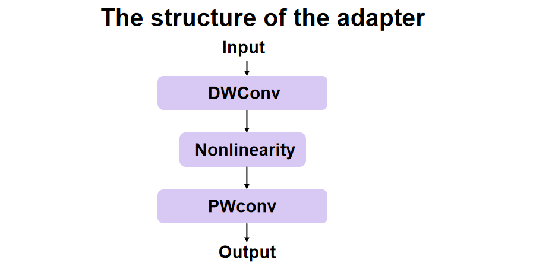

Experiments
Due to the lengthy pretraining , we finetuned the open-source model and achieved good results.
Based on this, we conducted the following attempts at the finetuning process.
Finetune with different loss
In the original work, the reconstruction loss used L1 loss. In the fine-tuning experiments, we
utilized pre-trained taichi model and added the SSIM loss to the reconstruction loss, specifically,
we designed two reconstruction loss functions.
The two reconstruction loss functions are shown
below.
`L_{rec}=L_1+L_{SSIM}``L_{rec}=0.7*L_1+0.3*L_{SSIM}`
Finetune with features loss
We want the decoder to be able to decouple the image features from the motion information, so we
add similarity constraints to the features, specifically, we add l1 loss to the feature layer.
Finetune with adapter
In the fine-tuning task, the optimization of a specific task can be carried out by introducing an
adapter module. The adapter module is a lightweight set of parameters that are added to the middle
layer of the model to protect the parameters of the original pre-trained model. The goal of this
approach is to adapt the parameters of the adapter module to the new task without changing the
overall model structure.In the experiment, we introduced the adapter into the model by way of
residuals.

Finetune with LoRA
Low Rank Adaptation (LoRA) is used to address the challenges faced in finetuning large language
models. For large models with billions of parameters, finetuning for specific domains is costly.
LoRA retains the weights of pretrained models and adds trainable layers within each model block.
This leads to a significant reduction in the number of parameters that need to be finetuned.
Generally speaking, LoRA is used in transformer architectures. However, LIA is composed of
convolutional neural networks, so we use ConvLoRA from the article CnvLoRA and AdaBN Based
Domain Adaptation via Self Training for finetuning.

Default finetune
| Model |
Recon loss |
Lpips loss |
| taichi_40000 |
0.01990 |
0.06349 |
| taichi_80000 |
0.01929 |
0.05776 |
| taichi_120000 |
0.01914 |
0.05586 |
Finetune with different loss
`L_{rec}=L_1+L_{SSIM}`
| Model |
Recon loss |
Lpips loss |
| taichi_40000 |
0.01985 |
0.05244 |
| taichi_80000 |
0.01739 |
0.04728 |
| taichi_120000 |
0.01712 |
0.04780 |
Finetune with different loss
`L_{rec}=0.7*L_1+0.3*L_{SSIM}`
| Model |
Recon loss |
Lpips loss |
| taichi_40000 |
0.01787 |
0.04785 |
| taichi_80000 |
0.01722 |
0.04689 |
| taichi_120000 |
0.01764 |
0.04753 |
Finetune with feature loss(add to all feature layers)
| Model |
Recon loss |
Lpips loss |
| taichi_40000 |
0.01787 |
0.04785 |
| taichi_80000 |
0.01739 |
0.04728 |
| taichi_120000 |
0.01712 |
0.04780 |
Finetune with feature loss(add to the deepest three feature layers)
| Model |
Recon loss |
Lpips loss |
| taichi_40000 |
0.02278 |
0.05261 |
| taichi_80000 |
0.01819 |
0.04708 |
| taichi_120000 |
0.01721 |
0.04651 |
visualization of feature layers
Finetune with adapter
| Model |
Recon loss |
Lpips loss |
| Adapter_40000 |
0.02102 |
0.06175 |
| Adapter_80000 |
0.02121 |
0.06159 |
| Adapter_120000 |
0.02539 |
0.06105 |
Due to the extremely short time required to update the parameters of the discriminator, we provide
the result that the discriminator does not use adapter.
Finetune with LoRA
| Model |
Recon loss |
Lpips loss |
| Lora_40000 |
0.01991 |
0.05804 |
| Lora_80000 |
0.01948 |
0.05589 |
| Lora_120000 |
0.01968 |
0.05462 |
| Lora_w/o_Dis_40000 |
0.02012 |
0.05951 |
| Lora_w/o_Dis_80000 |
0.01974 |
0.05687 |
| Lora_w/o_Dis_120000 |
0.01954 |
0.05563 |
Due to the extremely short time required to update the parameters of the discriminator, we provide
the result that the discriminator does not use ConvLoRA.